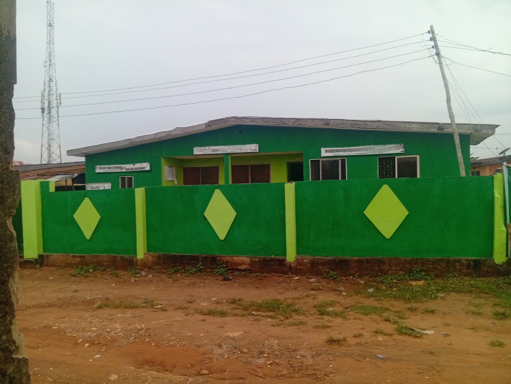
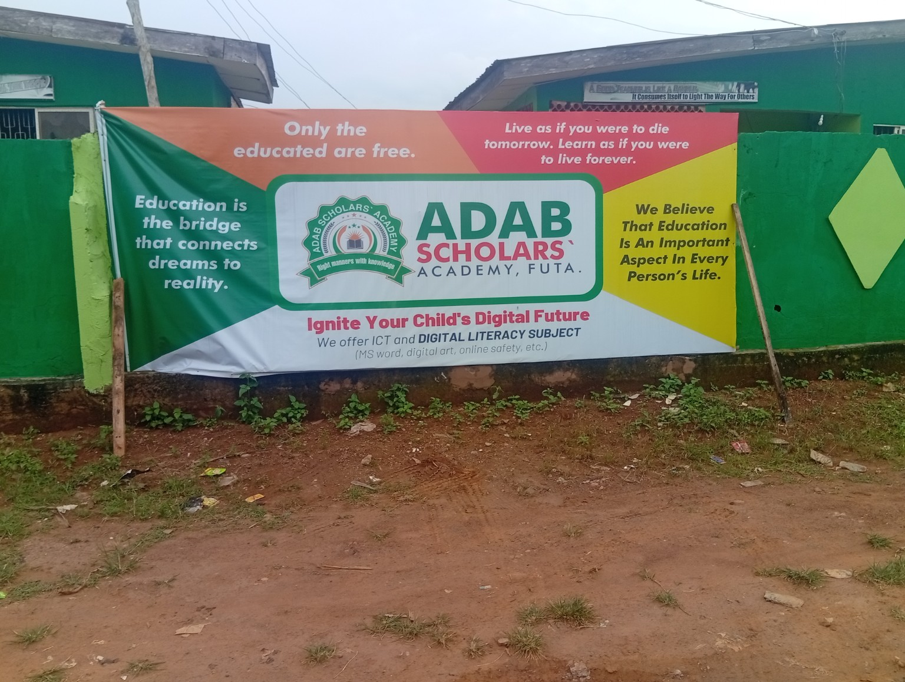
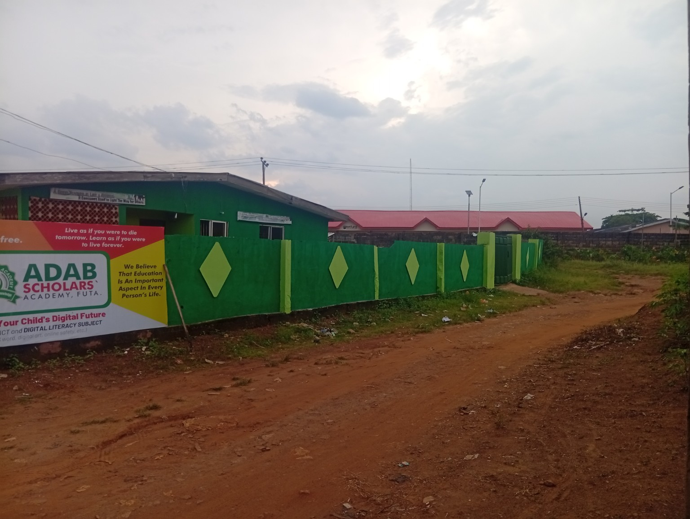
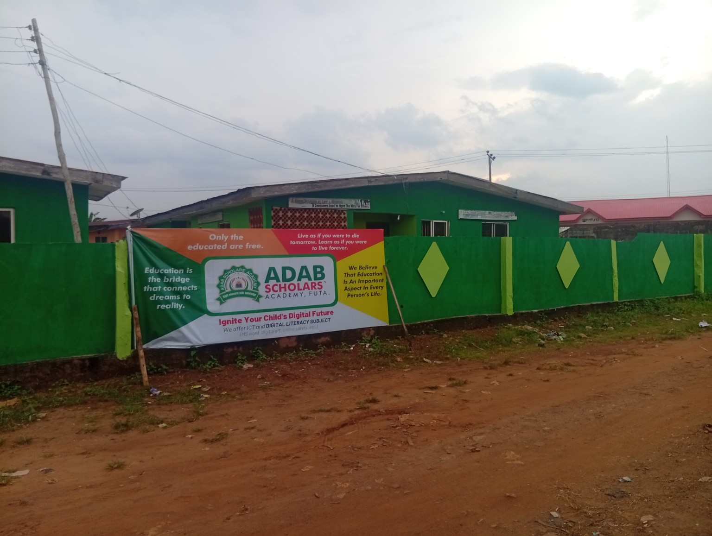
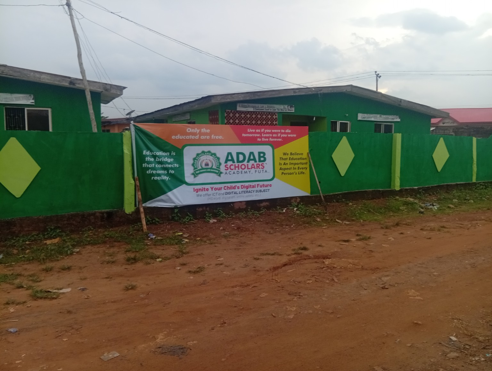

01 / ACADEMICS
Academic learning
Standard academic instruction forms part of the school's educational focus, supporting children's learning and intellectual development.
At ADAB Scholars' Academy, learning goes beyond the classroom. We bring academic education together with Islamic learning and values to help children grow in knowledge and character.
More than lessons. A meaningful education.
Education shapes what a child knows. Character shapes how that knowledge is used.
ADAB Scholars' Academy is based at FUTA South Gate in Akure, Ondo State. The school's stated focus brings standard academic instruction together with Islamic training and values, guided by a simple belief: knowledge and good manners belong together.
Explore the learning experience ↗
Explore the areas of learning highlighted in the school's materials. Detailed class levels, curriculum and programme arrangements can be added once confirmed by the school.
Standard academic instruction forms part of the school's educational focus, supporting children's learning and intellectual development.
Islamic training and values are integrated into the school's approach, with an emphasis on learning alongside good manners.
The school's promotional material highlights a full Qur'an memorisation offering. Contact the school for programme details and arrangements.
The school advertises digital literacy learning, including Microsoft Word, digital art and online safety.
Tell me, I forget. Teach me, I remember. Involve me, and I learn.

The academy's published promotional material refers to both boarding and day options in connection with its Qur'an memorisation offering.
For current availability, age requirements, schedules, fees and boarding arrangements, please speak directly with the school.
Ask about schooling options ↗Interested in ADAB Scholars' Academy? Contact the school to ask about admission, available classes, Qur'an memorisation, day and boarding options, and the next steps for prospective families.
Make an admission enquiry ↗“The best teachers teach from their heart.”
THE ADAB LEARNING SPIRITA selection of photographs supplied for the school's website. More classroom, learning and student-life photographs can be added with the school's approval.



For admission enquiries and further information about the academy, please contact the school directly.